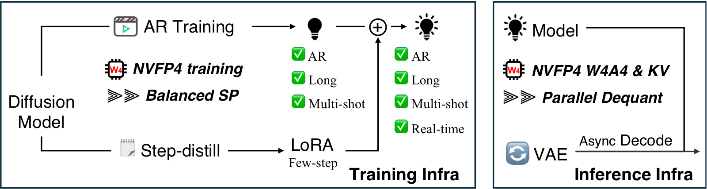
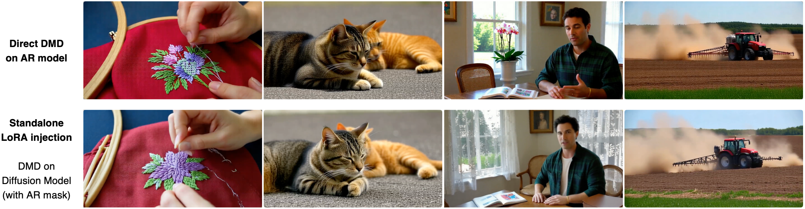

Long video generation infrastructure
LongLive2.0 Documentation
Setup, training, and inference instructions for the LongLive2.0 release. This release focuses on Wan2.2-TI2V-5B, chunk-level AR diffusion training, DMD distillation, and long-video inference.
About
LongLive2.0 co-designs chunk-level autoregressive video generation with the training and inference infrastructure needed for long videos. The release contains three primary workflows: AR diffusion training, DMD distillation, and inference.

Installation
Create a Python 3.10 environment named longlive2 and install the required packages.
conda create -n longlive2 python=3.10 -y
conda activate longlive2
pip install torch==2.8.0 torchvision==0.23.0 --index-url https://download.pytorch.org/whl/cu128
pip install -r requirements.txt
pip install flash-attn --no-build-isolationRepository
git clone https://github.com/NVlabs/LongLive.git
cd LongLiveModel Files
Download the Wan2.2-TI2V-5B components and place them under
wan_models/Wan2.2-TI2V-5B. LongLive2.0 checkpoints should be
placed in a local checkpoint folder, then referenced from the config files.
huggingface-cli download Wan-AI/Wan2.2-TI2V-5B \
--local-dir wan_models/Wan2.2-TI2V-5B
If inference.vae_type is set to mg_lightvae or
mg_lightvae_v2, download the corresponding VAE checkpoints
from Skywork/Matrix-Game-3.0 and place them under
wan_models/Matrix-Game-3.0.
wan_models/Matrix-Game-3.0/MG-LightVAE.pth
wan_models/Matrix-Game-3.0/MG-LightVAE_v2.pthNVFP4 Environment
The default installation above is the clean BF16 release setup. NVFP4 training and inference use local CUDA extensions and are more version-sensitive, so keep them in a separate environment.
conda create -n longlive2_nvfp4 python=3.12 -y
conda activate longlive2_nvfp4
conda install -c nvidia cuda-toolkit=12.8 -y
pip install -r requirements.txt
pip install --upgrade --index-url https://download.pytorch.org/whl/cu128 \
torch==2.10.0 torchvision==0.25.0| Component | Known-good version |
|---|---|
| Python | 3.12.12 |
| PyTorch | 2.10.0+cu128 |
| TorchVision | 0.25.0+cu128 |
| CUDA target | 12.8 |
| FlashAttention | 2.8.3, built from source |
Build NVFP4 extensions
cd fouroversix
pip install ninja packaging psutil "setuptools>=77.0.3"
export CUDA_ARCHS=100
pip install --no-build-isolation -e .
cd ..
cd utils/kernel
python setup.py build_ext --inplace
cd ../..- Use
CUDA_ARCHS=100for B200, GB200, or GB300 targets. - Build FlashAttention from source with tag
v2.8.3for the NVFP4 environment. - Install
transformer-engine[pytorch]ifmodel_quant_use_transformer_enginewill be enabled.
Quick Start
BF16
import torch
from omegaconf import OmegaConf
from pipeline import CausalDiffusionInferencePipeline
from utils.config import normalize_config
from utils.inference_utils import (
load_generator_checkpoint,
place_vae_for_streaming,
prepare_single_prompt_inputs,
save_video,
)
prompt = "A compact silver robot walks through a clean robotics lab."
merged_checkpoint_path = "LongLive-2.0-5B/model_bf16.pt"
config = normalize_config(OmegaConf.load("configs/inference.yaml"))
device = torch.device("cuda")
torch.set_grad_enabled(False)
pipe = CausalDiffusionInferencePipeline(config, device=device)
load_generator_checkpoint(pipe.generator, merged_checkpoint_path)
pipe = pipe.to(device=device, dtype=torch.bfloat16)
place_vae_for_streaming(pipe, config) # honor streaming_vae + vae_device when set
pipe.generator.model.eval().requires_grad_(False)
noise, prompts = prepare_single_prompt_inputs(config, prompt, device)
video = pipe.inference(noise=noise, text_prompts=prompts)
save_video(video[0], "videos/quickstart/sample.mp4", fps=24)
place_vae_for_streaming is a no-op unless
inference.streaming_vae is true and
inference.vae_device is set, so toggling streaming-pipeline
decode in the yaml is enough.
NVFP4
Point checkpoints.generator_ckpt in
configs/nvfp4/inference_nvfp4.yaml at the downloaded
checkpoint and set model_quant_use_transformer_engine
according to the backend:
- TransformerEngine checkpoint (
model_te.pt):model_quant_use_transformer_engine: true - FourOverSix checkpoint (
model_4o6.pt):model_quant_use_transformer_engine: false
setup_nvfp4_pipeline handles checkpoint loading, NVFP4
module wrapping, weight materialization, dtype/device placement, and
streaming-pipeline VAE relocation for both backends.
import torch
from omegaconf import OmegaConf
from pipeline import CausalDiffusionInferencePipeline
from utils.config import normalize_config
from utils.inference_utils import prepare_single_prompt_inputs, save_video, setup_nvfp4_pipeline
prompt = "A compact silver robot walks through a clean robotics lab."
config = normalize_config(OmegaConf.load("configs/nvfp4/inference_nvfp4.yaml"))
device = torch.device("cuda")
torch.set_grad_enabled(False)
pipe = CausalDiffusionInferencePipeline(config, device=device)
setup_nvfp4_pipeline(pipe, config, device)
pipe.generator.model.eval().requires_grad_(False)
noise, prompts = prepare_single_prompt_inputs(config, prompt, device)
video = pipe.inference(noise=noise, text_prompts=prompts)
save_video(video[0], "videos/quickstart/sample_nvfp4.mp4", fps=24)Configs
The release keeps BF16 configs at the top level and NVFP4 configs under configs/nvfp4.
| Config | Workflow | Main entry |
|---|---|---|
configs/train_ar.yaml |
AR diffusion training | train.py |
configs/train_dmd.yaml |
DMD distillation | train.py |
configs/inference.yaml |
Generation | inference.py |
configs/inference_sp.yaml |
Sequence-parallel generation | inference_sp.py |
configs/nvfp4/train_ar_nvfp4.yaml |
NVFP4 AR teacher-forcing training | train.py |
configs/nvfp4/train_dmd_nvfp4_step4.yaml |
NVFP4 DMD LoRA distillation | train.py |
configs/nvfp4/inference_nvfp4.yaml |
NVFP4 generation with optional KV quantization | inference.py |
Before running, replace the /path/to/longlive2/... placeholders
in the BF16 and NVFP4 configs with local dataset, prompt, and
checkpoint paths.
Training
LongLive2.0 uses a two-stage training path. The first stage trains the chunk-level AR diffusion model. The second stage distills it into a few-step generator with DMD and optional LoRA adapters.
Training Data Organization
AR diffusion training reads paired video-caption folders through
MultiVideoConcatDataset. Each sample has a matching
folder under video/ and caption/. The video
folder stores one or more clips, and the caption folder stores JSON
captions with matching file stems.
longlive2_train_dataset/
video/
sample_0001/
0.mp4
1.mp4
caption/
sample_0001/
0.json
1.jsonEach caption JSON should contain a caption field.
{
"caption": "A compact silver robot with one blue optic explores a clean robotics lab."
}- AR training uses longer windows and chunk-halo VAE preparation with sequence parallelism.
- AR training samples chunks according to the source video durations and loads the caption JSON with the same file stem as each sampled clip.
- Use
max_chunks_per_shotin the training config if a long video should be split into shorter virtual shots.
DMD distillation uses prompt-only backward simulation by default and
reads prompts through MultiTextConcatDataset. Set
configs/train_dmd.yaml:data.data_path to either a
.txt prompt file or a JSON caption directory.
dmd_distillation/
prompts.txt
json_prompts/
sample_0001/
0.json
1.json
shot_durations.txtAR Diffusion Training
Edit configs/train_ar.yaml to set the training dataset,
evaluation prompt folder, SP size, and logging options.
torchrun --standalone --nnodes=1 --nproc_per_node=8 train.py \
--config_path configs/train_ar.yaml \
--logdir logs/train_ar \
--wandb-save-dir wandb \
--disable-wandbinfra.sequence_parallel_sizecontrols the SP group size.infra.vae_halo_latentscontrols chunk-halo VAE preparation.model_kwargs.local_attn_sizeis kept in model kwargs to match model construction.inference.sampling_stepsand sink settings control training-time evaluation.
DMD Distillation
Edit configs/train_dmd.yaml to set initialization checkpoints
and distillation data. If the adapter section is present,
LoRA distillation is enabled.
The release supports two DMD LoRA settings. Both produce LoRA
checkpoints that can be used for inference, but they use different
student and critic initialization paths. The AR mask is enabled
throughout DMD training with algorithm.all_causal: true,
and the two settings may produce visually different results.
| Setting | Student / generator | Fake-score critic | Real-score teacher | Masking |
|---|---|---|---|---|
| Direct DMD on AR model | Initialize from the stage-1 AR-trained model. | Initialize from the stage-1 AR-trained model. | Use Wan2.2-TI2V-5B. | AR mask enabled with algorithm.all_causal: true. |
| Standalone LoRA injection | Initialize from Wan2.2-TI2V-5B. | Initialize from Wan2.2-TI2V-5B. | Use Wan2.2-TI2V-5B. | AR mask enabled with algorithm.all_causal: true. |

torchrun --standalone --nnodes=1 --nproc_per_node=8 train.py \
--config_path configs/train_dmd.yaml \
--logdir logs/train_dmd \
--wandb-save-dir wandb \
--disable-wandbcheckpoints.generator_ckptinitializes the student/generator. For direct DMD, point it to the stage-1 AR checkpoint; for standalone LoRA injection, keep the Wan2.2-TI2V-5B initialization.checkpoints.fake_score_ckptinitializes the fake-score critic when a separate critic checkpoint is used. Direct DMD initializes the critic from the same stage-1 AR model weights; standalone LoRA injection uses Wan2.2-TI2V-5B.checkpoints.real_score_ckptinitializes the real-score teacher when overridden. In both settings, the teacher is Wan2.2-TI2V-5B.algorithm.all_causal: truekeeps the AR mask enabled for both DMD LoRA settings.adapter.apply_to_critic: trueapplies LoRA to the critic as well as the generator.algorithm.real_guidance_scaleandalgorithm.fake_guidance_scaleare used by score distillation.inference.sampling_stepscontrols the rollout used during distillation.- Auto-resume is enabled by default. Pass
--no-auto-resumeto disable it.
NVFP4 Training
Use the longlive2_nvfp4 environment and build the NVFP4
extensions before running these commands. Replace the
/path/to/... placeholders in the configs first.
AR Diffusion Training
torchrun --standalone --nnodes=1 --nproc_per_node=4 train.py \
--config_path configs/nvfp4/train_ar_nvfp4.yaml \
--logdir logs/nvfp4_ar \
--wandb-save-dir wandb \
--disable-wandbDMD Distillation
torchrun --standalone --nnodes=1 --nproc_per_node=4 train.py \
--config_path configs/nvfp4/train_dmd_nvfp4_step4.yaml \
--logdir logs/nvfp4_dmd_step4 \
--wandb-save-dir wandb \
--disable-wandb--nproc_per_nodecontrols the per-node GPU count. The NVFP4 examples use 4 GPUs.infra.model_quantenables NVFP4 generator training for stage 1.infra.generator_quant,infra.real_score_quant, andinfra.fake_score_quantchoose which DMD networks use NVFP4 in stage 2.
After stage 1 and stage 2 are complete, export a merged inference checkpoint using the unified checkpoint export section.
Inference
Edit configs/inference.yaml to set the prompt folder,
generator checkpoint, optional LoRA checkpoint, output folder, and number
of samples.
torchrun --standalone --nnodes=1 --nproc_per_node=8 inference.py \
--config_path configs/inference.yaml| Field | Meaning |
|---|---|
data.data_path |
Prompt folder for generation. |
checkpoints.generator_ckpt |
Generator checkpoint. This can be either a merged checkpoint or the AR-trained base checkpoint used together with LoRA. |
checkpoints.lora_ckpt |
Optional LoRA checkpoint. Use it only when generator_ckpt points to the base generator rather than a merged checkpoint. |
inference.sampling_steps |
Number of denoising steps. |
inference.sink_size |
Standard attention sink length. |
inference.multi_shot_sink |
Enable multi-shot attention sink. |
inference.multi_shot_rope_offset |
Multi-shot RoPE offset. |
Export Inference Checkpoints
After AR diffusion training and DMD distillation, you may have an AR-trained base generator checkpoint and a DMD LoRA checkpoint. For inference, export a merged checkpoint once so runtime loading is simpler. Use the BF16 path for regular inference, and the NVFP4 path when preparing quantized inference checkpoints.
BF16 merged generator
This path merges the base generator and LoRA weights into one BF16
generator checkpoint. The script reads
checkpoints.generator_ckpt,
checkpoints.lora_ckpt, and the top-level
adapter settings from configs/inference.yaml.
python scripts/merge_lora_generator.py \
--config_path configs/inference.yaml \
--output_path /path/to/longlive2_merged_generator.pt \
--device cuda:0You can also override the two input checkpoints from the command line:
python scripts/merge_lora_generator.py \
--config_path configs/inference.yaml \
--generator_ckpt /path/to/ar_generator.pt \
--lora_ckpt /path/to/dmd_lora.pt \
--output_path /path/to/longlive2_merged_generator.pt \
--device cuda:0
To use the merged BF16 checkpoint with the full
inference.py entry point, set
checkpoints.generator_ckpt to the merged file and
remove checkpoints.lora_ckpt and the top-level
adapter section. Keeping LoRA enabled after loading a
merged checkpoint would apply the adapter twice.
checkpoints:
generator_ckpt: /path/to/longlive2_merged_generator.pt
# Remove lora_ckpt and adapter when using merged weights.NVFP4 merged exports
This path prepares merged checkpoints for NVFP4 inference. The script
reads generator_ckpt, lora_ckpt,
adapter, and model_quant_* from
configs/nvfp4/inference_nvfp4.yaml.
Save a compact FourOverSix materialized NVFP4 generator checkpoint:
python scripts/save_merged_nvfp4_generator.py \
--config_path configs/nvfp4/inference_nvfp4.yaml \
--output_path /path/to/model_4o6.pt \
--backend fouroversix \
--device cuda:0Save merged BF16 weights for TransformerEngine runtime quantization:
python scripts/save_merged_nvfp4_generator.py \
--config_path configs/nvfp4/inference_nvfp4.yaml \
--output_path /path/to/model_te.pt \
--backend transformer_engine \
--device cuda:0--backend fouroversixsaves the small packed/materialized NVFP4 checkpoint.--backend transformer_engineintentionally saves merged BF16 weights; TransformerEngine quantization is applied again when inference loads them.
Prompt Input Format
data.data_path can point to either a plain text file or a
directory of multi-shot prompt folders.
Single-shot text file
Each non-empty line is treated as one sample. The same caption is repeated across all generated temporal chunks.
prompts.txt
A compact silver robot with one blue optic moves through a clean robotics lab.
A first-person autonomous driving view explores a quiet campus road.Multi-shot directory
Each sample folder contains numbered JSON caption files. The
recommended layout makes data.data_path point directly
to the caption-root directory.
inference_prompts/
robot_lab_demo/
0.json
1.json
2.json
shot_durations.txt
The loader also accepts a dataset root that contains an outer
caption/ folder.
inference_prompts/
caption/
robot_lab_demo/
0.json
1.json
2.json
shot_durations.txt
If shot_durations.txt is present, each number gives the
number of temporal chunks for the corresponding caption.
{
"caption": "A compact silver robot with one blue optic stands beside a white workbench."
}
At shot boundaries, LongLive2.0 automatically prepends the configured
scene_cut_prefix to the first chunk of the new shot.
Prompt Design Notes
Multi-shot evaluation prompts should describe grounded, realistic short video sequences with simple elements, stable backgrounds, slow normal actions, and clear shot-to-shot progression. Each case folder represents one complete video, and each numbered JSON file describes one shot in that sequence.
shot_durations.txt files beside them.
Dataset Layout
The recommended layout is to make data.data_path point
directly to the caption-root directory.
prompt_root/
case_name/
0.json
1.json
2.json
...
shot_durations.txt
The inference loader also accepts a dataset root with an outer
caption/ folder.
prompt_root/
caption/
case_name/
0.json
1.json
2.json
...
shot_durations.txt- Use one folder per complete multi-shot video case.
- Name shot JSON files consecutively from
0.jsontoN-1.json. - Store one duration value per shot in
shot_durations.txt; the value is the number of blocks assigned to the matching shot. - Keep the number of duration values equal to the number of shot JSON files.
- The outer
caption/folder is optional for inference; ifdata.data_path/caption/exists, the code reads from it, otherwise it reads sample folders directly underdata.data_path.
Per-shot JSON
Each shot file must be valid JSON. The required field for generation
is caption; metadata fields may stay empty when they are
not needed by the prompt loader.
{
"video_path": "",
"relative_path": "",
"filename": "",
"caption": "Full shot prompt text here.",
"title": "Short descriptive title"
}Caption Structure
Aim for roughly 300 tokens per shot prompt. Use complete English
sentences in present tense, keep the caption as one JSON string, and
separate paragraphs with \n\n. Do not add bullet points
or Markdown formatting inside the caption.
| Paragraph | Focus |
|---|---|
| 1 | Visual style, color tone, lighting, atmosphere, and overall camera feeling. |
| 2 | Scene and environment, including time of day, weather, and stable background details. |
| 3 | Visible characters, stable identity descriptors, clothing, expression, and posture. |
| 4 | Key objects, materials, quantities, spatial positions, and foreground or background placement. |
| 5 | Action, blocking, subject motion, object interactions, and natural motion cues. |
| 6 | Shot size, depth of field, lens feeling, camera movement, and shooting angle. |
Five-paragraph captions are also acceptable. In that case, combine key objects with action, or combine action with cinematography.
Continuity Checklist
- Keep each shot visually simple. Use one main subject, one location, and one clear action when possible.
- Anchor identity with short repeated descriptors instead of relying only on words like
same. - Repeat important object attributes across shots, such as color, shape, material, and scale.
- Change the action or camera view at shot boundaries while preserving the subject description.
- Avoid describing the same completed action again in the next shot unless the action should continue.
- Use
shot_durations.txtto keep complex shots shorter and calm exploration shots longer. - Before adding a case, confirm every JSON has a non-empty
captionand the expected paragraph format.
NVFP4 Inference
Edit configs/nvfp4/inference_nvfp4.yaml to set the prompt
folder, generator checkpoint, optional DMD LoRA checkpoint, output
folder, and number of samples.
torchrun --standalone --nnodes=1 --nproc_per_node=4 inference.py \
--config_path configs/nvfp4/inference_nvfp4.yamlFor single-GPU inference, use python directly.
python inference.py --config_path configs/nvfp4/inference_nvfp4.yamlAsync / streaming VAE decode
Use the VAE decode options to decode long videos chunk by chunk, optionally overlapping decode with generation.
inference:
streaming_vae: true
async_vae: true
vae_type: wan # wan, mg_lightvae, mg_lightvae_v2
# Omit vae_device for same-GPU async CUDA-stream decode.
# Set vae_device to use a dedicated GPU for VAE decode.
# vae_device: "cuda:2"vae_device only applies when streaming_vae is
enabled. If vae_device is set, VAE decode runs on that
device in the dedicated VAE path. If it is omitted,
async_vae: true overlaps VAE decode on the inference GPU
with an extra CUDA stream.
Checkpoint styles
FourOverSix compact/materialized NVFP4 checkpoint:
checkpoints:
generator_ckpt: /path/to/model_4o6.pt
merge_lora: false
model_quant: true
model_quant_use_transformer_engine: falseTransformerEngine runtime quantization from merged BF16 weights:
checkpoints:
generator_ckpt: /path/to/model_te.pt
merge_lora: false
model_quant: true
model_quant_use_transformer_engine: truemodel_quant_use_transformer_engine: true when
loading a FourOverSix materialized checkpoint. FourOverSix checkpoints
store quantized_weight_* buffers and can only be loaded by
the FourOverSix path. TransformerEngine inference should load merged
BF16 weights and quantize them at runtime.
| Field | Meaning |
|---|---|
model_quant |
Enable generator NVFP4 inference; regular BF16 checkpoints are quantized during startup, while pre-saved FourOverSix checkpoints already contain materialized weights. |
merge_lora |
Merge the LoRA checkpoint before quantized materialization. Set to false when generator_ckpt already points to a merged export. |
inference.kv_quant |
Enable FP4 KV-cache storage with the fused dequant extension. |
inference.streaming_vae |
Decode generated latents chunk by chunk instead of decoding the full output at the end. |
inference.async_vae |
When streaming_vae is true and vae_device is omitted, overlap VAE decode with generation on an extra CUDA stream. |
inference.vae_type |
Select wan, mg_lightvae, or mg_lightvae_v2 for decode. |
inference.vae_device |
When streaming_vae is true, run VAE decode on a dedicated device such as cuda:2; otherwise it is ignored. |
torch_compile |
Set compile behavior to auto, true, or false. |
Sequence-parallel (SP) Inference
inference_sp.py drives Ulysses sequence-parallel sampling
for WAN. See configs/inference_sp.yaml for
sp_size, dp_size, prompts, checkpoints, and
the usual inference.* knobs.
torchrun --nproc_per_node=4 inference_sp.py --config_path configs/inference_sp.yaml--nproc_per_node equal to
sp_size × dp_size. The shipped example uses
sp_size: 4 and dp_size: 1, so it runs four ranks.
Utilities
Inspect Chunk-Halo VAE Windows
python scripts/compute_sp_vae_chunk_halo.py --config configs/train_ar.yamlDecode Saved Latents
python scripts/decode_vae_latents.py --help
python scripts/decode_lightvae_latents.py --helpTroubleshooting
--nproc_per_node matches the available GPUs and is
compatible with infra.sequence_parallel_size for AR training.
flash-attn fails to build, verify CUDA, PyTorch, and compiler
compatibility before running training.
fouroversix package and
utils/kernel extension before enabling NVFP4 inference with
inference.kv_quant.